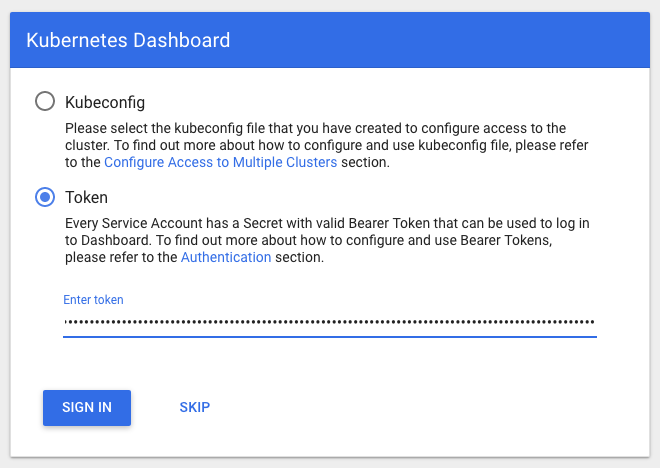

Tutorial: Deploy the Kubernetes Web UI (Dashboard)
This tutorial guides you through deploying the Kubernetes dashboard to your Amazon EKS cluster, complete with CPU and memory metrics. It also helps you to create an Amazon EKS administrator service account that you can use to securely connect to the dashboard to view and control your cluster.
Prerequisites
This tutorial assumes the following:
-
You have created an Amazon EKS cluster by following the steps in Getting Started with Amazon EKS.
-
The security groups for your control plane elastic network interfaces and worker nodes follow the recommended settings in Security Group Considerations.
-
You are using the custom kubectl client for Amazon EKS, and that it is configured to communicate with your Amazon EKS cluster.
Step 1: Deploy the Dashboard
Use the following steps to deploy the Kubernetes dashboard, heapster, and
the influxdb backend for CPU and memory metrics to your cluster.
To deploy the Kubernetes dashboard
-
Deploy the Kubernetes dashboard to your cluster.
kubectl apply -f https://raw.githubusercontent.com/kubernetes/dashboard/master/src/deploy/recommended/kubernetes-dashboard.yamlOutput:
secret "kubernetes-dashboard-certs" created serviceaccount "kubernetes-dashboard" created role "kubernetes-dashboard-minimal" created rolebinding "kubernetes-dashboard-minimal" created deployment "kubernetes-dashboard" created service "kubernetes-dashboard" created -
Deploy
heapsterto enable container cluster monitoring and performance analysis on your cluster.kubectl apply -f https://raw.githubusercontent.com/kubernetes/heapster/master/deploy/kube-config/influxdb/heapster.yamlOutput:
serviceaccount "heapster" created deployment "heapster" created service "heapster" created -
Deploy the
influxdbbackend forheapsterto your cluster.kubectl apply -f https://raw.githubusercontent.com/kubernetes/heapster/master/deploy/kube-config/influxdb/influxdb.yamlOutput:
deployment "monitoring-influxdb" created service "monitoring-influxdb" created -
Create the
heapstercluster role binding for the dashboard.kubectl apply -f https://raw.githubusercontent.com/kubernetes/heapster/master/deploy/kube-config/rbac/heapster-rbac.yamlOutput:
clusterrolebinding "heapster" created
Step 2: Create an eks-admin Service
Account and Cluster Role Binding
By default, the Kubernetes dashboard user has limited permissions. In this section,
you create an eks-admin service account and cluster role binding that you
can use to securely connect to the dashboard with admin-level permissions. For more
information, see Managing Service Accounts in the Kubernetes documentation.
To create the eks-admin service account and cluster role
binding
Important
The example service account created with this procedure has full
cluster-admin (superuser) privileges on the cluster. For more
information, see Using RBAC
Authorization in the Kubernetes documentation.
-
Create a file called
eks-admin-service-account.yamlwith the text below.apiVersion: v1 kind: ServiceAccount metadata: name: eks-admin namespace: kube-system -
Apply the service account to your cluster.
kubectl apply -f eks-admin-service-account.yamlOutput:
serviceaccount "eks-admin" created -
Create a file called
eks-admin-cluster-role-binding.yamlwith the text below.apiVersion: rbac.authorization.k8s.io/v1beta1 kind: ClusterRoleBinding metadata: name: eks-admin roleRef: apiGroup: rbac.authorization.k8s.io kind: ClusterRole name: cluster-admin subjects: - kind: ServiceAccount name: eks-admin namespace: kube-system -
Apply the cluster role binding to your cluster.
kubectl apply -f eks-admin-cluster-role-binding.yamlOutput:
clusterrolebinding "eks-admin" created
Step 3: Connect to the Dashboard
Now that the Kubernetes dashboard is deployed to your cluster, and you have an administrator service account that you can use to view and control your cluster, you can connect to the dashboard with that service account.
To connect to the Kubernetes dashboard
-
Start the kubectl proxy.
kubectl proxy -
Retrieve an authentication token for the
eks-adminservice account. Copy the<authentication_token>value from the output; you will use this token to connect to the dashboard.kubectl -n kube-system describe secret $(kubectl -n kube-system get secret | grep eks-admin | awk '{print $1}')Output:
Name: eks-admin-token-b5zv4 Namespace: kube-system Labels: <none> Annotations: kubernetes.io/service-account.name=eks-admin kubernetes.io/service-account.uid=bcfe66ac-39be-11e8-97e8-026dce96b6e8 Type: kubernetes.io/service-account-token Data ==== ca.crt: 1025 bytes namespace: 11 bytes token:<authentication_token> -
Open the following link with a web browser to access the dashboard endpoint: http://localhost:8001/api/v1/namespaces/kube-system/services/https:kubernetes-dashboard:/proxy/
-
Choose Token, paste the
<authentication_token>output from the previous command into the token field, and choose SIGN IN.Note
It may take a few minutes before CPU and memory metrics appear in the dashboard.
Step 4: Next Steps
After you have connected to your Kubernetes cluster dashboard, you can view and
control your cluster using your eks-admin service account. For more
information on using the dashboard, see the project documentation on
GitHub.